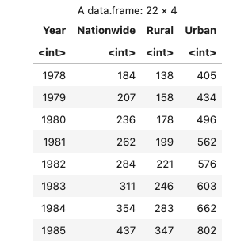
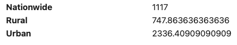
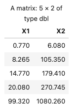
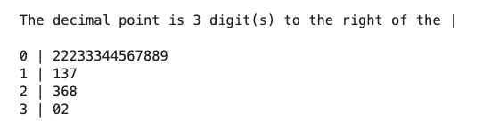
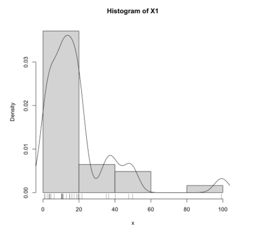
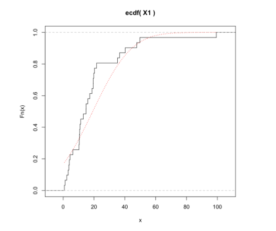
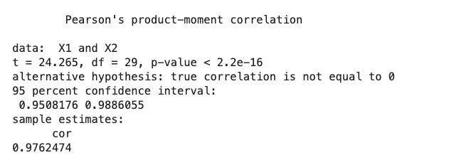

用 R 做数据分析
用 R 做数据分析
Vol_0：数据的数字特征及相关分析
导入数据
导入文本表格数据
1 | Year Nationwide Rural Urban |
R 代码：
1 | data <- read.table("./data.txt", header=TRUE) |
结果：

导入 CSV 数据
1 | 序号,省市区,11月,1～11月 |
R 代码：
1 | data <- read.csv("./data.csv") |
注：这个数据里表头标题有中文、有特殊符号，会被 R 自动处理成：
1 | > cat(names(data)) |
可以手动改一下：
1 | data <- data[-1] # remove "序号" col |
结果：

注：后文里会随机使用这两个导入的数据中的一个作示例。
attach
为了方便调用 data.frame 里的各列数据，我们可以：
1 | attach(data) |
然后就可以直接用列名引用一列数据了，比如：
1 | print(X1) |
不必再通过 data 取索引：
1 | print(data[2]) |
用完之后，记得 detach：
1 | detach(data) |
均值、方差、标准差、变异系数、偏度、峰度
单变量
数据：一个变量，一“列”数据
1 | x <- c(1, 2, 3, 4, 5) |
均值：
$$
\overline x = \frac{1}{n}\sum_{i=1}^nx_i
$$
1 | mean(x) |
方差：
$$
s^2=\frac{1}{n-1}\sum_{i=1}^n(x_i-\overline x)^2
$$
1 | var(x) |
标准差：
$$
s = \sqrt{s^2}=\sqrt{\frac{1}{n-1}\sum_{i=1}^n(x_i-\overline x)^2}
$$
1 | sd(x) |
变异系数：
$$
CV = \frac{s}{\overline x}
$$
1 | cv <- function(x) sd(x)/mean(x) |
注：书上是百分数的 $CV = 100 \times \frac{s}{\overline x} (%)$.
偏度：
$$
g_1=\frac{1}{(n-1)(n-2)}\frac{1}{s^3}\sum_{i=1}^n(x_i-\overline x)^3
$$
1 | g1 <- function(x) { |
峰度：
$$
g_2 = \frac{n(n+1)}{(n-1)(n-2)(n-3)}\frac{1}{s^4}\sum_{i=1}^n(x_i-\overline x)^4\-\frac{3(n-1)^2}{(n-2)(n-3)}
$$
1 | g2 <- function(x) { # 峰度 |
作用于 data.frame
我们导入的数据都是 data.frame，可以单独取出一列来，就和上面的 x 一样了：
1 | x <- data[[2]] # 取出 data 的第二列数据 |
但每一列都都调用一次也很烦，所以这里还有一种方法，一次性把 mean 或者其他函数作用于 data.frame 的各列（这里用前文第一个表格导入进来的 data 做例子）：
1 | apply(data[-1], MARGIN=2, FUN=mean) |
结果：

说明：
- 这里 data 的第一列是字符的，求均值没有意义: 用
data[-N]去掉第 N 列（R 从1开始索引） - 第二个参数
MARGIN=2就是逐列处理 - 第三个 FUN 是要作用的函数，这里是求均值。方差什么的也是一样的，把这个参数换成
FUN=var啥的就行了。
all in one
为了方便，我们可以把算这几个东西的过程封装在一起：
1 | describes <- function(df) { |
传入参数是一个 data.frame，这个函数会求出各列的均值、方差等，（例如作用于前文导入的 csv 数据）：
1 | describes(data[-1]) |
结果：

一次性全出来了，这样就很方便。
调包
当然，这些操作都有第三方包有封装实现，比如这个：
安装这个包（直接在 R 里面写）：
1 | install.packages("psych") |
导包：
1 | library(psych) |
然后就可以用这个包里的东西了。
这个包提供了前面最难写的峰度偏度：
1 | # g1、g2 是用 type=2: see help(skew) |
这个包还提供了一个 describe 函数可以一次性求出前面大多数值（类似于我们手写的 describes）：
1 | describe(data[-1], type=2) |
结果：

中位数、上下四分位数、四分位极差
可以先求五数：最小值、下四分位数、中位数、上四分位数、最大值
1 | fn <- apply(data[-1], 2, fivenum) |

四分位极差：
1 | R1 <- function(Q3, Q1) Q3 - Q1 |
[Math Time]
p 分位数：
$$
M_p=\left{\begin{array}
x_{([np]+1)} ,& np \textrm{ 不是整数}\
\frac{1}{2}(x_{(np)}+x_{(np+1)}) ,& np \textrm{ 是整数}\
\end{array}\right.
$$
上下四分位数：
$$
Q_3=M_{0.75}, \qquad Q_1=M_{0.25}
$$
四分位极差：
$$
R_1=Q_3-Q_1
$$
注：R 求分位数用 quantile，详见 help(quantile)。
有了上下四分位数、四分位极差，可以求个异常数据：
定义：下、上截断点：
$$
Q_1-1.5R_1,\qquad Q_3+1.5R_1
$$
大于「上截断」、小于「下阶段」的数据视为异常值：
1 | abnormal <- function(x) { |
1 | apply(data[-1], 2, abnormal) |
数据分布图
茎叶图
1 | stem(Nationwide) |

直方图
最简单的是直接用 hist(x)，但我们可以画的好看一点。
封装：
1 | histogram <- function(x, xname="x") { |
调用：
1 | histogram(X1, "X1") |
结果：

经验分布函数图
封装：
1 | plot_ecdf <- function(x, xname="x") { |
注意 xs 这里我选择用 $\frac{1}{\sqrt{n}}$ 的密度，这个值比较适合我的数据（画出来不过稀也不太密），这个可以随便改。
调用：
1 | plot_ecdf(X1, "X1") |
结果：

正态 Q-Q 图
1 | qqnorm(X1) |

Pearson 与 Spearman 相关系数
Pearson 相关系数
二维总体： $(X,Y)^T$
观测数据：$(x_1,y_1)^T,(x_2,y_2)^T,\cdots,(x_n,y_n)^T$
记：$\overline x=\frac{1}{n}\sum_{i=1}^nx_i,\quad \overline y=\frac{1}{n}\sum_{i=1}^ny_i$
则 $X, Y$ 的观测数据的方差：
$$
s_{xx}=\frac{1}{n-1}\sum_{i=1}^n(x_i-\overline x)^2
\quad
s_{yy}=\frac{1}{n-1}\sum_{i=1}^n(y_i-\overline y)^2
$$
$X,Y$ 的观测数据的协方差：
$$
s_{xy}=\frac{1}{n-1}\sum_{i=1}^n(x_i-\overline x)^2(y_i-\overline y)^2
$$
（注：协方差矩阵 $S=\left[\begin{matrix}s_{xx} & s_{xy} \ s_{yx} & s_{yy}\end{matrix}\right]$，其中 $s_{yx}=s_{xy}$）
Pearson 相关系数：
$$
r_{xy}=\frac{s_{xy}}{\sqrt{s_{xx}}\sqrt{s_{yy}}}
$$
这个值 $|r_{xy}|\le1$，衡量 X 和 Y 的线性相关程度:
- $r_{xy}\rightarrow 1$ 正相关
- $r_{xy}\rightarrow 0$ 不线性相关
- $r_{xy}\rightarrow -1$ 负相关
用 R 来算相关系数，用 cor(x, y, method="pearson") 这个函数会直接求出 $r_{xy}$ 值。也可以用下面这个函数，会输出更多的信息：
1 | cor.test(X1, X2, method="pearson") |
输出：($\textrm{cor}=r_{xy}$)

【Math Time】关于上面输出的假设检验：
设二维总体 $(X,Y)^T$ 的分布函数为 $F(x,y)$
总体的相关系数 $\rho_{_{XY}}=\frac{\mathrm{Cov}(X,Y)}{\sqrt{\mathrm{Var}(X)}\sqrt{\mathrm{Var}(Y)}}$
$n$ 充分大时，有 $\rho_{{XY}} \approx r{xy}$
现在的问题是：
- 对任意观测数据总可以求到 $r_{xy}$，而且求出来一般不为0
- 而如果总体的 $X$、$Y$ 是不相关的（$\rho_{XY}=0$）：这时用 $r_{xy}$ 来度量 $X$、$Y$ 的关联性就没有意义了。
所以要做个假设检验：
$$
H_0:\rho_{{XY}}=0 \quad \leftrightarrow \quad H_1:\rho_{{XY}}\ne0
$$
若总体时二维正态的，则 $H_0$ 为真时，统计量
$$
t=\frac{T_{xy}\sqrt{n-2}}{\sqrt{1-r_{xy}^2}}
\sim
t(n-2)
$$
将观测数据算得的 $t$ 值记为 $t_0$ 则检验 $p$ 值：
$$
p=P_{H_0}(|t|>|t_0|)=P(|t(n-2)|\ge|t_0|)
$$
给定显著水平 $\alpha$ ，$p<\alpha$ 时拒绝 $H_0$，认为 $X,Y$ 相关，可以用 $r_{xy}$ 衡量相关程度。
Spearman 相关系数
Spearman 是秩相关系数。
样本秩：把观测值 $x_1,x_2,\cdots,x_n$ 从小到大排序，$x_i$ 排在第几个则其秩 $R_i$ 就是多少。
e.g.
$$
\begin{array}{r}
x_i: & 7 & -3 & -1 & 5 \
R_i: & 4 & 1 & 2 & 3
\end{array}
$$
记：
- $x_1,x_2,\cdots,x_n$ 的秩分别为：$R_1,R_2,\cdots,R_n$
- $\overline R=\frac{1}{n}\sum_{i=1}^nR_i=\frac{1}{n}\sum_{i=1}^n i=\frac{n+1}{2}$
- $y_1,y_2,\cdots,y_n$ 的秩分别为：$S_1,S_2,\cdots,S_n$
- $\overline S=\frac{1}{n}\sum_{i=1}^nS_i=\frac{n+1}{2}$
则定义 Spearman 相关系数：
$$
\begin{array}{l}
q_{xy} &=& \frac{\sum_{i=1}^n(R_i-\overline R)(S_i-\overline S)}{\sqrt{\sum_{i=1}^n(R_i-\overline R)^2}\sqrt{\sum_{i=1}^n(S_i-\overline S)^2}}
\
&=& 1-\frac{6}{n(n^2-1)}\sum_{i=1}^n(R_i-S_i)
\end{array}
$$
用 R 来计算(输出里 $\textrm{rho}=q_{xy}$)：
1 | cor.test(X1, X2, method="spearman") |

还是一样的，有一个假设检验：
$$
H_0:\rho_{{XY}}=0
\quad \leftrightarrow \quad
H_1:\rho_{{XY}}\ne0
$$
【EOF】
暂时就这些了。最近忙，后面如果有时间可能还会写回归分析、方差分析…这些完整一套的。
CDFMLR 2021.06.07